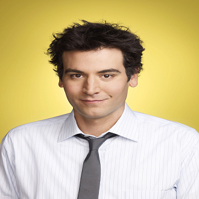
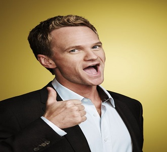
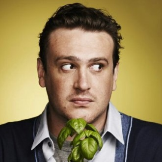
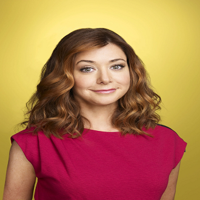

-
Ted Mosby
Descrição
Ted Mosby é um romântico incorrigível, arquiteto e protagonista de "How I Met Your Mother". Ele busca o amor verdadeiro em Nova York, narrando aos filhos a longa jornada até encontrar a mãe deles. Ted é sonhador, sentimental e um amigo leal, mas também pode ser teimoso e ingênuo em seus relacionamentos.
-
Barney Stinson
Descrição
Barney Stinson é o icônico mulherengo de "How I Met Your Mother", conhecido por seus ternos impecáveis, frases de efeito e o famoso "Playbook". Ele é confiante, extravagante e adora ser o centro das atenções. Barney pode ser manipulador e superficial, mas também é leal aos amigos e demonstra um lado mais vulnerável ao longo da série.
-
Marshall Eriksen
Descrição
Marshall Eriksen é o amigo gentil e leal do grupo, casado com Lily. Ele é um advogado apaixonado por justiça, criaturas míticas e jogos. Marshall é ingênuo, sensível e adora sua terra natal, Minnesota. Ele é o contraponto perfeito para a personalidade extravagante de Barney, e sua lealdade aos amigos é inabalável.
-
Lily Aldrin
Descrição
Lily Aldrin é a professora de jardim de infância, pintora amadora e esposa de Marshall em "How I Met Your Mother". Ela é carinhosa, manipuladora e a "mãe" do grupo, sempre preocupada com o bem-estar de seus amigos. Lily é impulsiva, adora fazer compras e possui um lado possessivo, especialmente em relação a Marshall. No entanto, sua lealdade e amor pelos amigos são inegáveis, tornando-a uma peça fundamental do grupo.
-
Robin Scherbatsky
Descrição
Robin Scherbatsky é a jornalista canadense do grupo de amigos em "How I Met Your Mother". Ela é independente, sarcástica e tem um passado como popstar adolescente. Robin é ambiciosa em sua carreira, adora charutos, uísque e hóquei. Ela pode ser fechada emocionalmente e valoriza sua liberdade, o que às vezes causa conflitos em seus relacionamentos. Ao longo da série, Robin desenvolve laços profundos com o grupo e demonstra um lado mais vulnerável e amoroso.